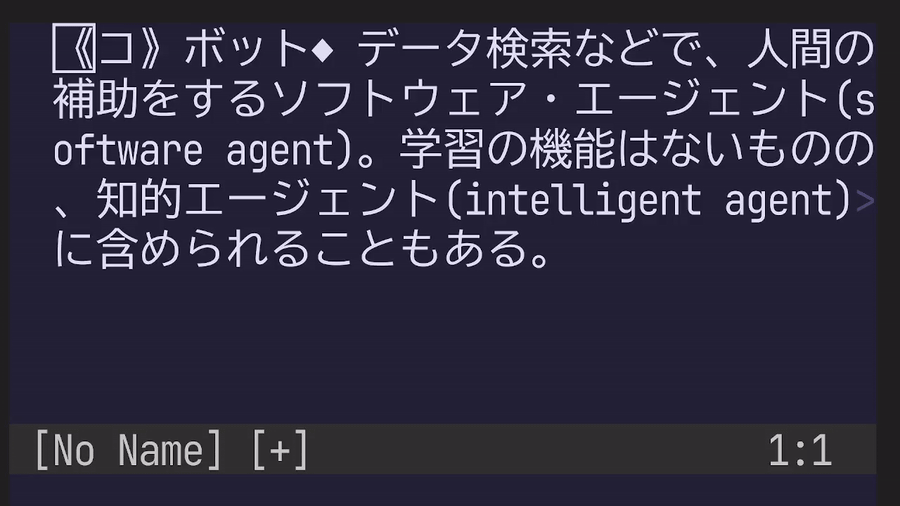

Budouxは文字列の改行を、人間にとって読みやすい位置で行うためのアルゴリズム。 Google製で、日本語や中国語、タイ語に対応し、PythonやJavaScript、Javaの実装が公式提供されている。
deno eval \
'import { loadDefaultJapaneseParser } from "npm:budoux";
console.log(loadDefaultJapaneseParser().parse("今日は天気です。"));'
# [ "今日は", "天気です。" ]BudouxのLua実装にあたるatusy/budoux.luaの利用例として、Wモーションを拡張してみました。人間が読んでて違和感ないところまでカーソルが移動するので、なかなかの使い勝手です。
以下は、英辞郎に記載のbotの説明文をWモーションで移動した例です（https://eow.alc.co.jp/search?q=bot）。実装してる時にvim-jpでbotが話題になって、なんとなく検索してみたら、デモに丁度よさそうな文でした。

通常、Wモーションは次のWORDに移動します。
本来のWORDの定義は、空白文字以外から成る文字列もしくは空行です。英語など、空白文字が単語の区切りとなる言語では、Wモーションは非常に便利です。一方で日本語では実質的に行末までの移動になってしまい、使い勝手が悪いです。
そこで、Budouxを使って日本語の文を適切な位置で区切ることで、Wモーションを拡張しました。ただし、Budouxは英数字に対して区切りを入れないため、カーソル位置周辺の文字列を考慮して、適宜、本来のWモーションにフォールバックするような実装が必要になります。
パフォーマンスを考慮するなら、もう少し実装に工夫があってもいいかなと思いますが、ひとまずこんな感じ。同じノリでB, E, gEも実装できるはず。
vim.keymap.set({ "n", "x", "o" }, "W", function()
local cursor = vim.api.nvim_win_get_cursor(0)
local line = vim.api.nvim_buf_get_lines(0, cursor[1] - 1, cursor[1], false)[1]
local right = line:sub(cursor[2] + 1)
--[[ if cursor is on %s, %w, or %p ]]
local i = 0
for char in right:gmatch(".") do
i = i + 1
if char:match("%s") then
-- jump with W if
-- * cursor is on a space
-- * cursor is on a sequence of alphanumerics or punctuations followed by a space
vim.cmd("normal! W")
return
end
if not char:match("%w") and not char:match("%p") then
if i == 1 then
-- jump with budoux if cursor is on a multibyte character
break
end
-- jump to the next multibyte character
-- if cursor is on a sequence of alphanumerics or punctuations followed by a multibyte character
vim.api.nvim_win_set_cursor(0, { cursor[1], cursor[2] + i - 1 })
return
end
end
-- [[jump with budoux]]
-- if there is no break within the sequence of multibyte characters,
-- jump to the end of the seqience.
--
-- Example where `|` is the cursor and `^` is the jump target:
-- あああa
-- | ^
local model = require("budoux").load_japanese_model()
-- Segumentation requires characters on the left of the cursor.
local segments = model.parse(line)
local n = 0
for _, seg in ipairs(segments) do
n = n + #seg
if n > cursor[2] then
break
end
end
local w, s, p, r = right:find("%w"), right:find("%s"), right:find("%p"), #right
local delta = math.min(w or r, s or r, p or r)
-- jump to the next segment
local nmax = cursor[2] + delta - 1
if n < nmax then
vim.api.nvim_win_set_cursor(0, { cursor[1], n })
return
end
-- jump to the next WORD
if delta == s then
vim.cmd("normal! W")
return
end
-- jump to the next %w or %p or the end of the line
vim.api.nvim_win_set_cursor(0, { cursor[1], nmax })
-- jump to next line if cursor is on the last character
vim.cmd("normal! hl") -- correct cursor position if it is on the middle of a multibyte character
if vim.api.nvim_win_get_cursor(0)[2] == cursor[2] then
vim.cmd("normal! W")
end
end)この調子でbionic readingの日本語版を実装できるといいなあ。